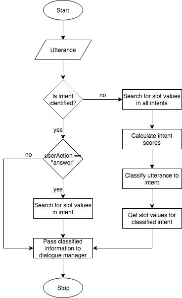

The main responsibility of the intent classifier is identifying the intent of a user from an utterance. Additionally, it also identifies values provided for slots within user utterances. The flowchart below describes the intent classification algorithm implemented in Cuenifrom.
Utterances made by the user should go through the intent classifier even though the user intent may have already been identified. If the intent has been identified, the classifier should attempt to identify slot values only if the userAction has been set to answer.
When attempting to identify the user intent, the classifier tokenizes, and stems the utterance made by the user, and compares it with how often each word occurs in each intent. The previous section intent processor explains the process of tokenization and stemming. The code below shows how this is done.
intent_scores = []
intent_words = utterance_data['intent_words']
corpus_words = utterance_data['corpus_words']
tokenized_message = word_tokenize(message.lower())
for intent, words in intent_words.items():
score = 0
for word in tokenized_message:
stemmed_word = stemmer.stem(word)
if stemmed_word in words:
score += (1 / corpus_words[stemmed_word])
intent_score = {'intent': intent, 'score': score}
intent_scores.append(intent_score)
The message variable refers to the message sent by the user (utterance made by the user). Notice how each word from the message is tokenized, stemmed, and lower cased. The accuracy of this algorithm is significantly improved by accounting for how commonly each word occurs in the provided set of sample utterances. This is due to the fact that words that are used more frequently such as "the", "is", "a", etc. should carry a lower weight than some of the other words.
Taking these weights into account, a score is provided for every intent. This score is later used as a factor when determining the intent of the user.
A user may provide values for slots along with their utterances. As a result, the classifier must also attempt to identify these slot values. Cuneiform currently supports 3 types of slot values.
When attempting to identify dates and times from user utterances, Cuneiform makes use of the dateparser Python library. This library provides modules to easily parse dates, and times provided in natural language into a datetime object which we can make use of.
As stated in the intent processor, custom slot values are processed, and the information are stored in another file. The post processed data in the file is saved in JSON format. Shown below is an example of the processed slots in the ChessHelper sample.
{
"intents": [
{
"name": "PieceIntent",
"slots": [
{
"name": "Piece",
"type": "custom",
"values": [
{
"name": "king",
"words": [
"king",
"baron"
]
},
{
"name": "queen",
"words": [
"queen"
]
},
{
"name": "rook",
"words": [
"rook",
"tow",
"castl"
]
},
{
"name": "bishop",
"words": [
"bishop"
]
},
{
"name": "knight",
"words": [
"knight",
"hors"
]
},
{
"name": "pawn",
"words": [
"pawn"
]
}
]
}
]
}
]
}
The message provided by the user is tokenized, and each tokenized word is stemmed, and put into a list. Each word in this list is compared with the processed slot values in the file. If a match is found, the classifier uses this information when classifying the user intent. This is done as follows.
for message_word in enumerate(tokenized_message):
message_word = stemmer.stem(message_word)
for intent in intents_list:
if intent_name is None:
intent_name = intent['name']
if intent_name == intent['name']:
slots_list = intent['slots']
for slot in slots_list:
slot_name = slot['name']
slot_values = slot['values']
for value in slot_values:
words = value['words']
for word in words:
if message_word == word:
slot_data = {'intent': intent_name, 'slot': slot_name,
'value': value['name']}
identified_slots.append(slot_data)
The next section explores the Cuneiform development environment.